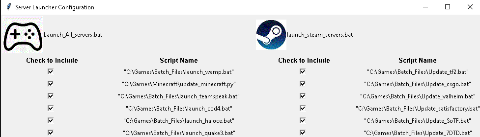

| |
To remove a server from the startup list, simply run C:\Servers\Edit Batch Launchers.py and uncheck the servers you don't want auto-launching with windows.
This will add a "REM" line in front of that game's launcher in the launch servers batch files so it skips those lines.

To add a new Steam-based server to the list:
Firstly, browse to the SteamCMD folder and make a copy of cs_ds.txt to edit it's contents and rename it your new game _ds.txt eg: newgame_ds.txt
Then edit the newly renamed file to have the correct steam APP ID for the game server you're building.
Make sure to give it a directory. Do not include spaces in the directory name or it may error. C:\new_game works fine.

Now we must make the desktop shortcuts and readme and config file shortcuts in a folder under C:\Servers\ so it can be found easy, that folder has a shortcut in the quick launch bar and desktop. You can right click on this new folder and under properties, cutomize give it a nice icon to match the game's.
Copy the CS: GO folder from the C:\Servers page and re-name it to your game name. Also re-name the files within it for clarity. We'll give it a new folder icon soon.
Next Edit the "update server settings" shortcut to point to the newgame_ds.txt file you made earlier in the steamCMD folder.
Also edit the arguments within the Update new game server

Now run your newly created update shortcut to start downloading the game itself from the internet.
Once it's finished you can point the "New Game Server" shortcut at the newly downloaded server on C:\
Now we can make the server folder containing our new shortcuts look like it should by right clicking on the folder itself, properties, customize. Then selecting the newly downloaded game on c:\ to locate a proper icon.
Now we have to make the game launch with windows:
Then you copy a batch file within C:\Games\Batch_Files such as "update_csgo.bat" and re-name it "update_newgame.bat" and edit it, changing it to launch the newly created update shortcut you added to the c:\servers directory, changing it's echo'd callouts from refrencing CSGO to whatever your new game is

Now we will clone launch_csgo.bat and do the same thing, but change the .exe it looks for so it doesn't launch the service twice to the .exe your game server is called in task manager when running. And the .lnk shortcut to the one we updated in the c:\servers\new game folder that launches the game server
Then finally add a call line to C:\Servers\Launch_all_servers.bat
Now you can either launch the server from the servers folder you created under c:\Servers, or let it auto-launch from the batch file!
|


|
| |
|